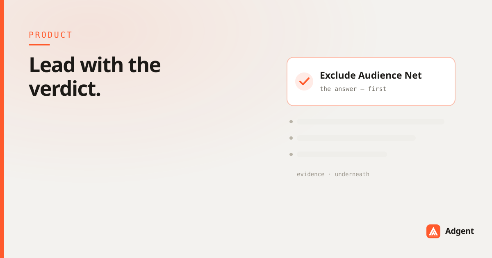

Why Adgent leads with the verdict
A dashboard is a filing cabinet that renders. It shows you everything and concludes nothing. Every Adgent brief inverts that: the verdict first, the evidence underneath, and nothing you didn't need.

Most reporting tools solve a problem nobody has. Performance marketers are not short of data — they're drowning in it. The scarce thing was never the metric. It's the sentence that tells you what the metric means.
The filing cabinet that renders
A dashboard is a neutral surface. It presents forty numbers with equal weight and equal confidence, and quietly hands the entire analytical burden back to you. Which of these moved? Which of those movements matter? Which is noise, which is a trend, which is an attribution artifact that will correct itself by Thursday?
The tool doesn't know. It was never built to know. It renders your data faithfully and leaves you exactly where you started — except now you've spent twenty minutes looking at it.
A dashboard hands you data. It never hands you a decision. The gap between those two things is a person's whole morning.
What a senior analyst does differently
Give the same account to a good analyst and you don't get forty numbers back. You get a paragraph: "Prospecting is fine, don't touch it. The retargeting set is bleeding — CPM's up 40% and the creative's nine days old. I'd swap it today. Everything else can wait."
That paragraph is doing three things a dashboard cannot: it ranks by impact, it discards what doesn't matter, and it commits to a view. It's a shorter output that took more thinking, not less.
The principle, stated plainly
So every Adgent brief is built to the same shape:
- The verdict first. One line, in plain language, that answers "what should I do about my account today?" before any chart appears.
- The evidence underneath. The numbers that support the verdict, in the order that matters — not the order the API returned them.
- Nothing you didn't need. If a metric didn't change the conclusion, it doesn't earn a place in the brief. It's still there if you ask. It just isn't in your way.
The hardest part of that list is the third one. Leaving things out requires being right about what matters, and every tool that has ever hedged by showing you everything did it to avoid that responsibility.
Why this is a product decision, not a styling one
Leading with the verdict forces the system to actually have one. You can't rank by impact without a model of what impact means for this account. You can't discard the irrelevant without knowing what's relevant to this brand. You can't commit to a view without carrying the reasoning that produced it — and being willing to show it when asked.
That's the whole bet: the format isn't a presentation layer over a dashboard. It's the shape of the thinking, made visible. A tool that leads with the verdict has to earn the verdict first.
You already know what your numbers are. The question worth answering is what they mean — and that's the only question we're interested in.